Thoughtful nurse-led oversight and attentive daily support.
Licensed Adult Family Home · Everett / Silver Fir, Washington
Warm, reassuring care in a place that feels like home.
Rest Assured AFH provides nurse-led adult family home care in a peaceful, family-centered environment. Our goal is simple: to help residents feel safe, respected, comfortable, and truly cared for every day.
Family-Centered
Nurse-Led
Home-Like Setting
License #: 758759
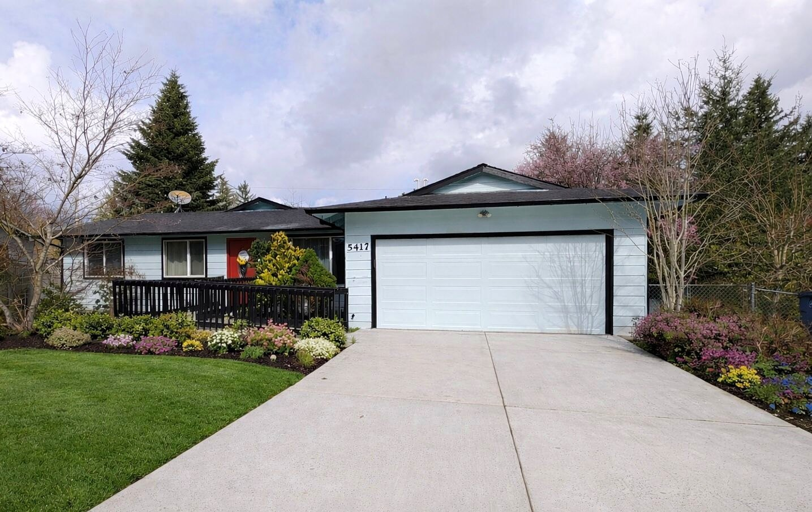
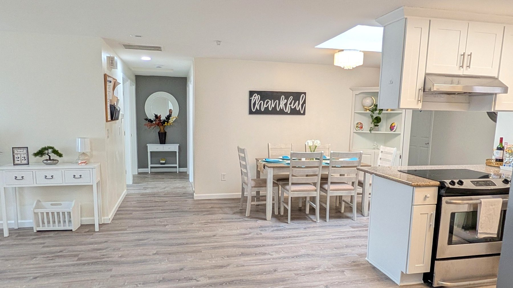
Compassion, dignity, and peace of mind — all in a setting that feels personal and calm.
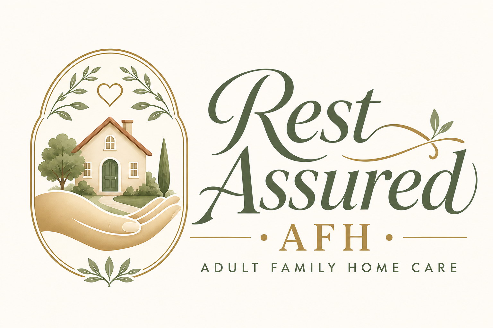
A smaller home environment where residents feel known and respected.
Care shaped by compassion, kindness, and meaningful human connection.
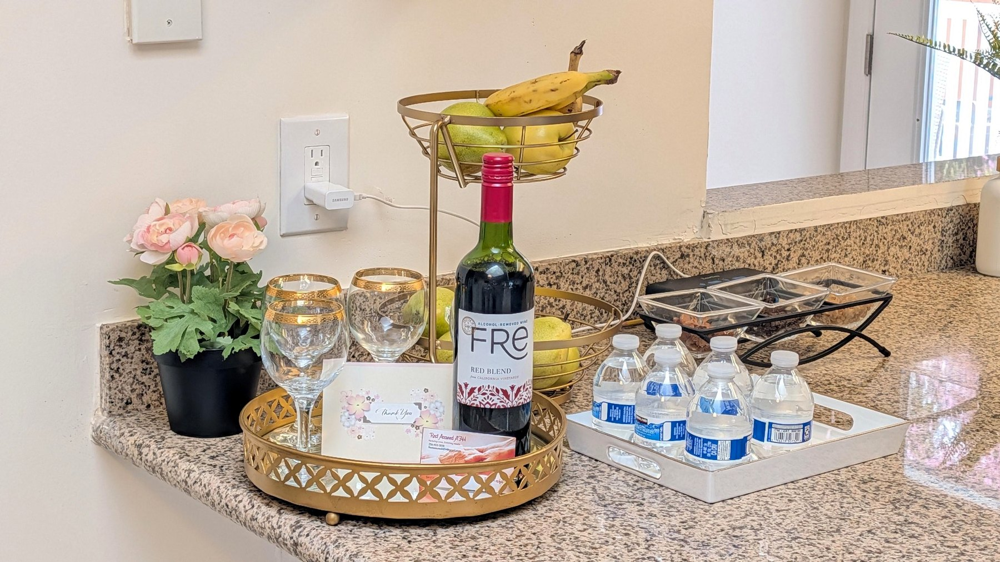
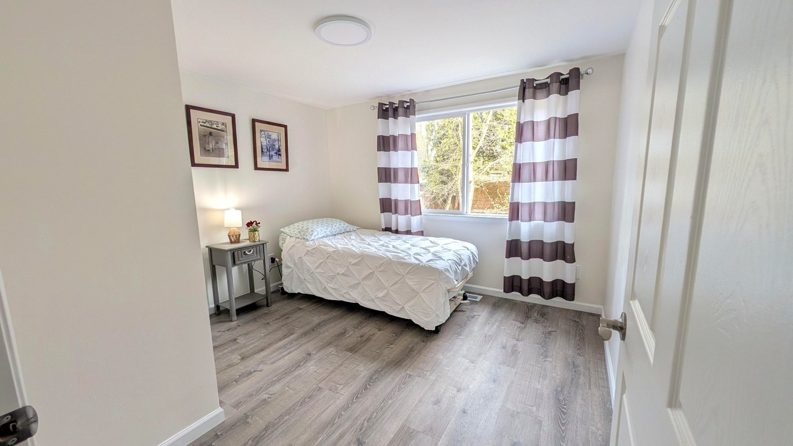
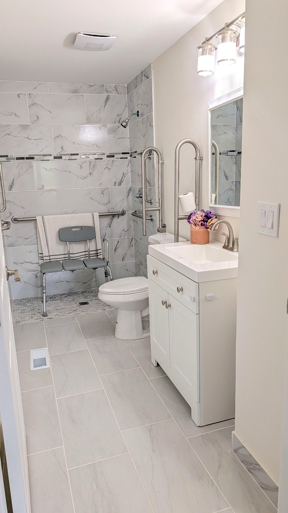
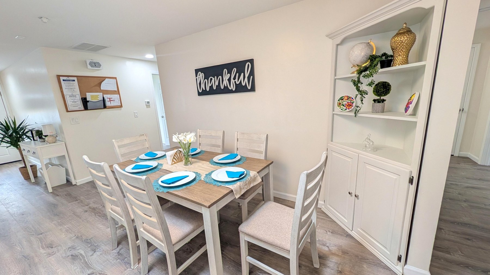
About Rest Assured AFH
Care guided by nursing experience, family values, and a sincere heart for elders.
Rest Assured AFH was created to offer a calm, respectful, and genuinely caring alternative to larger settings. The home is led by a licensed nurse with advanced education, a strong sense of responsibility, and deep family values.
Our approach is personal and relationship-based. We believe residents should feel safe, seen, and comfortable — not simply cared for as part of a routine. Families can expect thoughtful communication, consistent support, and an environment shaped by dignity, patience, and compassion.
Services
Support tailored to daily living, comfort, and peace of mind.
Care is provided with attention to each resident’s individual needs, comfort, routines, and dignity.
Personal Care
Assistance with bathing, grooming, dressing, toileting, mobility, and daily living routines.
Medication Assistance
Support with medication routines according to care plans, provider guidance, and applicable regulations.
Nurse-Led Support
Care guided by professional observation, thoughtful communication, and clinical awareness.
Memory Care
Calm routines and supportive care for residents with memory-related needs, when accepted by the home.
Hospice Support
Compassionate comfort-oriented support in collaboration with hospice or other healthcare providers, when appropriate.
Respite Care
Short-term stays may be available for families needing temporary support or caregiver relief.
Meals & Nutrition
Home-style meals, snacks, hydration support, and attention to individual comfort and preferences.
Housekeeping & Laundry
Clean and orderly living spaces that help residents feel comfortable and at home.
Our Home
Warm spaces designed for comfort, familiarity, and everyday peace.
A real look inside the home environment: clean, comfortable spaces prepared for everyday care, rest, meals, and family visits.
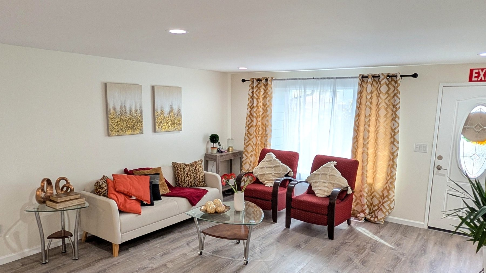
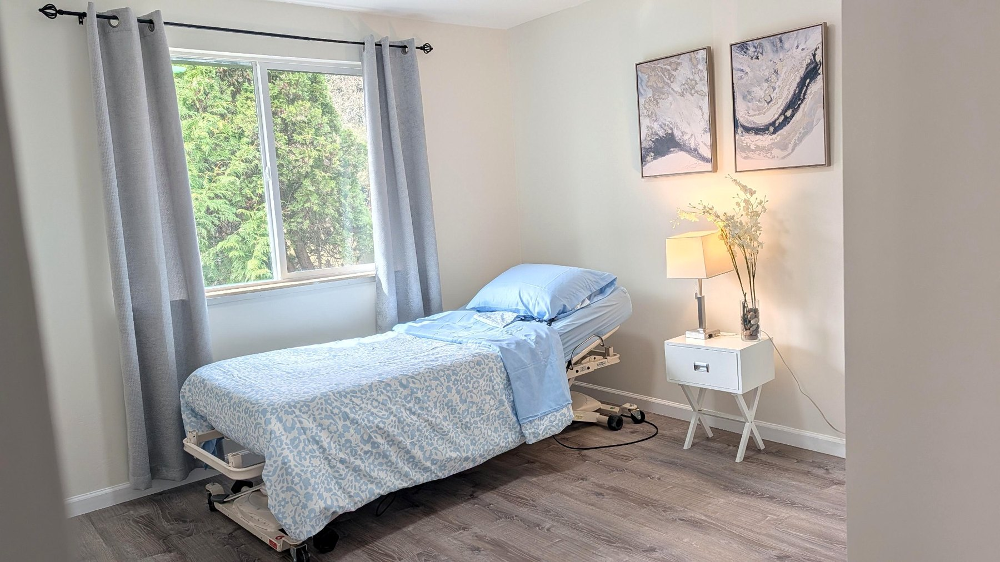
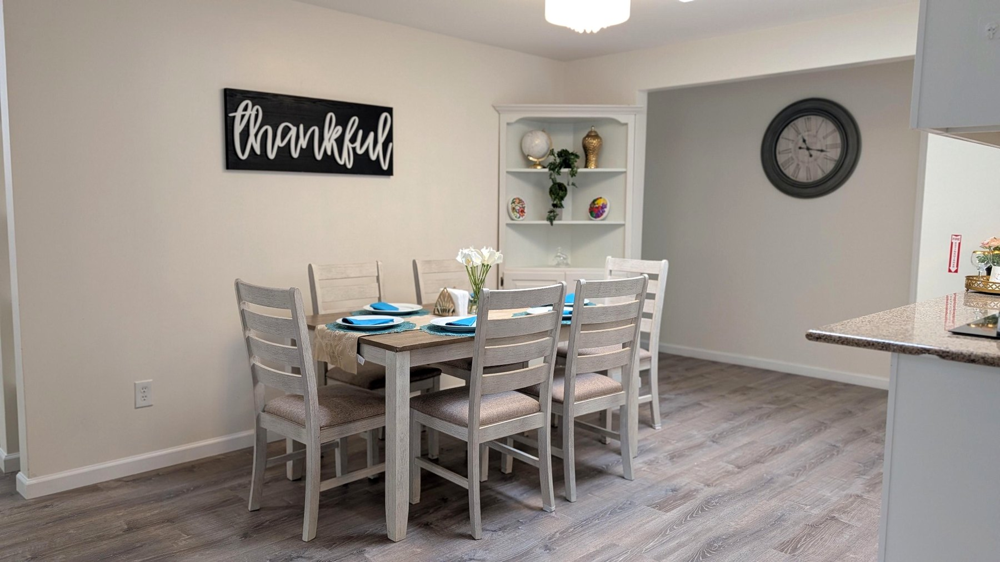
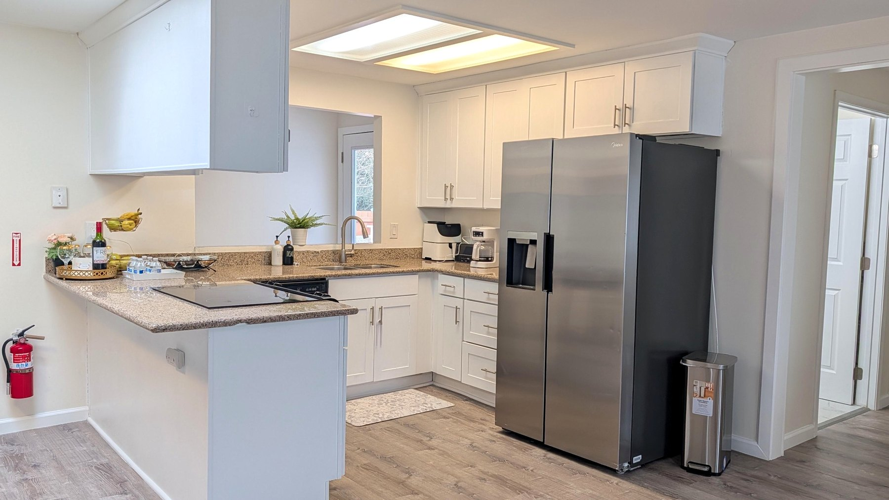
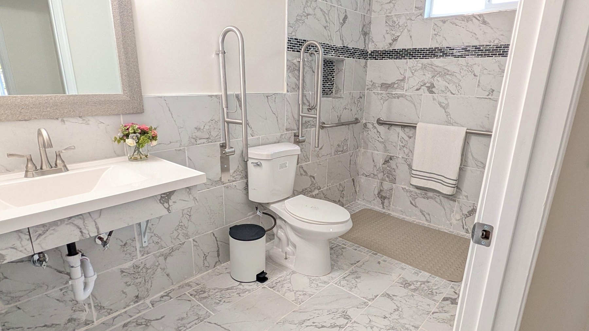
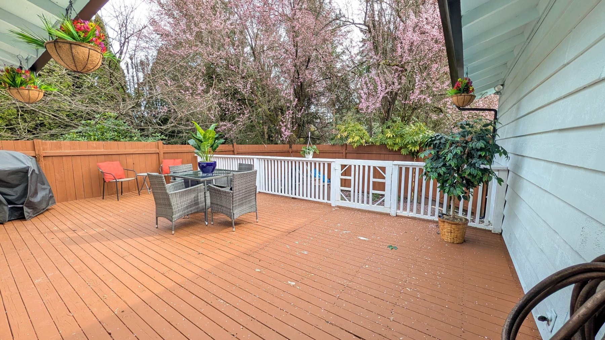
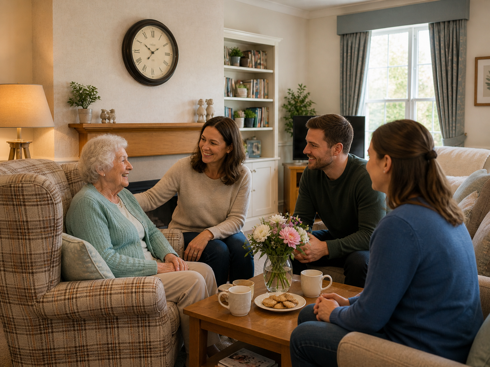
Why Families Choose Us
A more personal setting where care feels thoughtful, steady, and human.
Smaller home atmosphere
A quieter, more intimate setting can help residents feel calmer and more comfortable than in larger institutions.
Clear family communication
Families deserve reassurance, transparency, and a provider who takes their concerns seriously.
Respect and dignity first
We believe every resident deserves care that is gentle, attentive, and rooted in dignity and compassion.
Professional oversight
Nurse-led care supports thoughtful observation, careful routines, and a high level of responsibility.
Location
Conveniently located in the Everett / Silver Fir area.
Rest Assured AFH is located in the Everett / Silver Fir area of Washington.
Contact
Let’s talk about the care your loved one needs.
Choosing the right adult family home is a meaningful decision. We welcome your questions and would be honored to speak with you about whether Rest Assured AFH may be the right fit.
Home Phone(425) 332-3455
Mobile Phone(206) 403-3838
Emailrestassuredafh@gmail.com
Service AreaEverett / Silver Fir, Washington
Tour AvailabilityPrivate tours by appointment
Please do not send detailed medical information by email. A full care discussion should take place privately during the intake process.